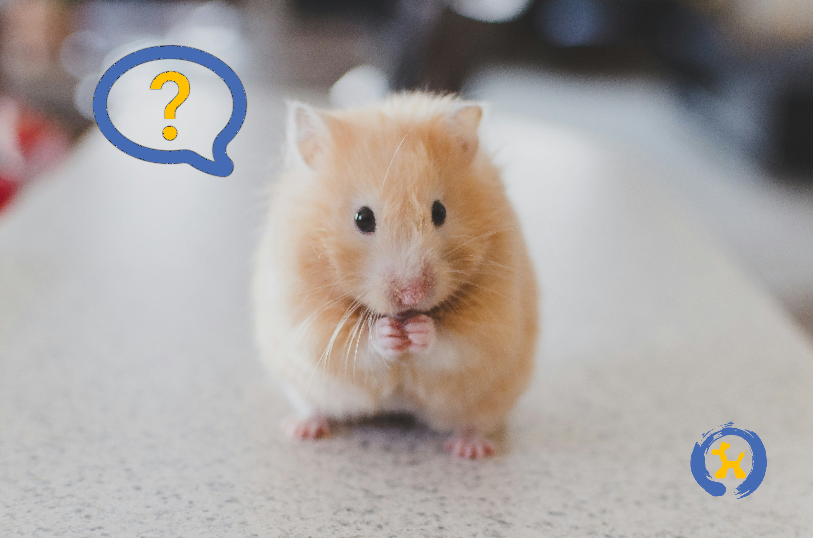

FAQ
Pexperts Frequently Asked Questions

Our “Pexperts” typically encounter the following questions when consulting with prospective
“pet
parents:”
What is the best way to rid my dog or cat of fleas?
Sometimes our furry friends pick up hitchhikers that
make
them very itchy and uncomfortable. If gone unchecked, fleas can infest your home,
making
it even more difficult to rid them from your loved one’s coat. To eliminate fleas,
choose a shampoo specially formulated to kill fleas and be sure to read and follow
all
instructions on the label. Repeat treatment as necessary until your pet is free of
fleas; if you see skin irritation, stop use immediately and contact your local vet.
How long can I expect my pet bird to live?
The answer can vary widely depending on the type of
bird,
the size, the environment, and of course, mother nature. Assuming all is well in the
external factors that are out of the owner's control, cockatiels and budgies live up
to
20 years old on average. However, many parrot variations are known to live nearly an
astounding 100 years! As with many living organisms, longevity can be increased by
keeping annual veterinarian visits, maintaining a healthy diet, and keeping your
feathery friend's environment sanitary.
How often should I feed my pet snake?
Most snakes eat one to two times per week, depending on
their age, size, and activity level. Female snakes often increase their food intake
as
breeding season gets underway. Some snakes can go as long as two weeks before
needing
their next meal; this is normal. However, if your snake has not eaten in two or
three
weeks and seems lethargic, reach out to your local vet to determine if your snake
might
be ill or injured.
 Adoption Questions
Adoption Questions


Check out our adoption page to find
information on pets available for adoption.
Learn More
About Adoption
If you have a question that is not listed here, please feel free to contact us and we will be happy to help you.
Our “Pexperts” typically encounter the following questions when consulting with prospective “pet parents:”
What is the best way to rid my dog or cat of fleas?
Sometimes our furry friends pick up hitchhikers that make them very itchy and uncomfortable. If gone unchecked, fleas can infest your home, making it even more difficult to rid them from your loved one’s coat. To eliminate fleas, choose a shampoo specially formulated to kill fleas and be sure to read and follow all instructions on the label. Repeat treatment as necessary until your pet is free of fleas; if you see skin irritation, stop use immediately and contact your local vet.
How long can I expect my pet bird to live?
The answer can vary widely depending on the type of bird, the size, the environment, and of course, mother nature. Assuming all is well in the external factors that are out of the owner's control, cockatiels and budgies live up to 20 years old on average. However, many parrot variations are known to live nearly an astounding 100 years! As with many living organisms, longevity can be increased by keeping annual veterinarian visits, maintaining a healthy diet, and keeping your feathery friend's environment sanitary.
How often should I feed my pet snake?
Most snakes eat one to two times per week, depending on their age, size, and activity level. Female snakes often increase their food intake as breeding season gets underway. Some snakes can go as long as two weeks before needing their next meal; this is normal. However, if your snake has not eaten in two or three weeks and seems lethargic, reach out to your local vet to determine if your snake might be ill or injured.
Adoption Questions
Check out our adoption page to find
information on pets available for adoption.
Learn More
About Adoption
Check out our adoption page to find
information on pets available for adoption.
Learn More
About Adoption
If you have a question that is not listed here, please feel free to contact us and we will be happy to help you.